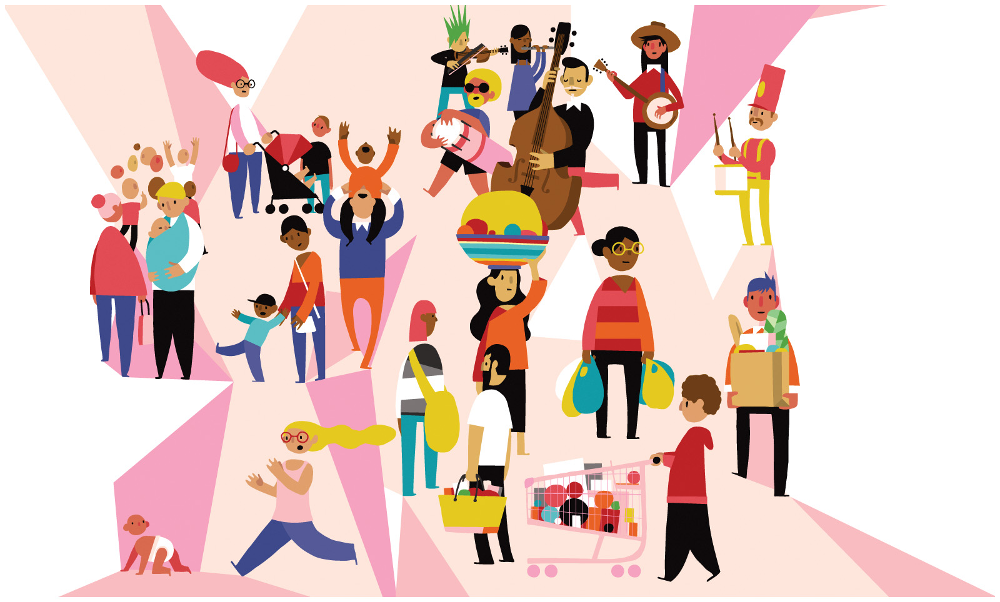

Culture¶
This lesson introduces how sociologists think about culture. Culture is one of the fundamental elements of social life and, thus, an essential topic in sociology. Many of the concepts presented here will come up again in almost every subsequent lesson. Because culture is learned so slowly and incrementally, we are often unaware of how it becomes ingrained in our ways of thinking. Applying the sociological perspective to culture requires us to recognize the strangeness in our own culture. This lesson outlines the basics of studying culture and allows you to test potential relationships between television depictions of families and marriage rates. Although culture is familiar to us, you should be seeing it in a new and different way by the time you finish this lesson.
Learning Objectives¶
By the end of this lesson, you will be able to:
Describe how sociologists define the components of culture.
Identify variation in culture and cultural change.
Analyze the relationship between culture and family.

Discuss (Thursday during class):¶
Context Matters: The Permanence of Racism¶

This week we watch first episode of American to Me. This is the first episode of a ten part series looking at race and class in an American high school. We will watch it together starting Thursday at 9:50am.
Be sure to have the movie ready to roll at the start of class.
Login to the course Slack at 9:45am and say hi to your group!
Before Thursday:
Think about the social life in your high school: did people of similar races stick together or do they mix? If they stick together, when?
Is it important for some people who share the same racial identity to spend time together, apart from the larger collective?
What’s your racial context in college and how does it inform how you navigate the spaces you occupy?
Assignments¶
Be sure to hand these in before the deadline
Inquizitive Chapter Set 3 (Tuesday at 9:45am)
Families on Television application (Sunday at 11:59pm)
America to Me reflection (Sunday at 11:59pm)
Questions¶
Questions about assignments or the sociology of culture?
Post it in the Slack #ask-a-prof channel!
Ask your peers in the Slack #ask-anyone chanel!
Signup for virtual office hours!
Email me or your TA.
Lesson Keywords¶
ethnocentrism
cultural relativism
material culture
symbolic culture
Sapir-Whorf hypothesis
values
norms
laws
folkways
signs
gestures
language
mores
taboo
sanction
social control
Dominant culture
subculture
counterculture
ideal culture
real culture
cultural diffusion
cultural imperialism
sanction